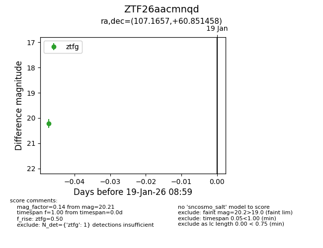
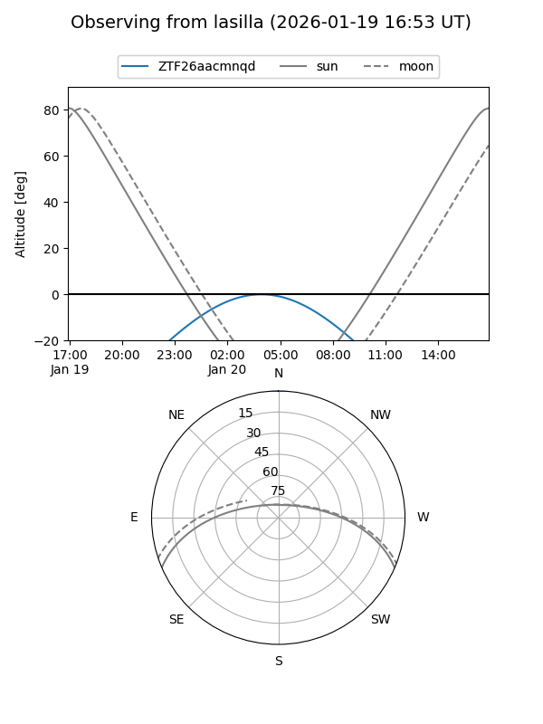
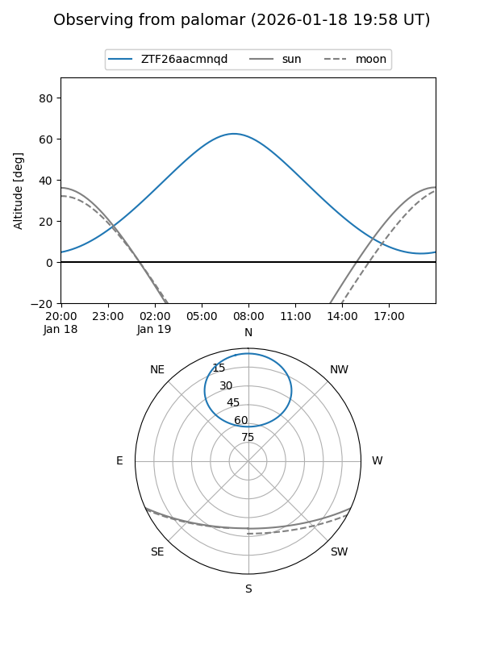

ZTF26aacmnqd
Target ZTF26aacmnqd at 2026-01-19 09:01
Aliases and brokers:
FINK: link
Lasair: link
ALeRCE: link
alt names
ZTF26aacmnqd (ztf,fink_ztf)
Coordinates:
equatorial (ra, dec) = 107.1657,+60.85146
equatorial (HMS+DMS) = 07:08:39.78,+60:51:05.25
galactic (l, b) = (155.4931,+25.51756)
Flags:
Photometry:
last ztfg=20.21
1 ztfg detections
Lightcurve

Visibility


Additional plots